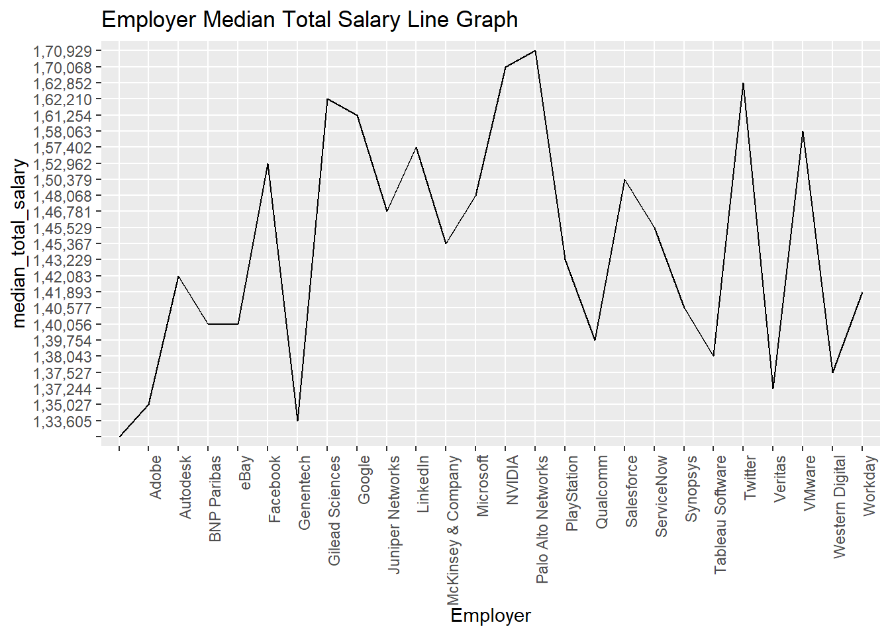
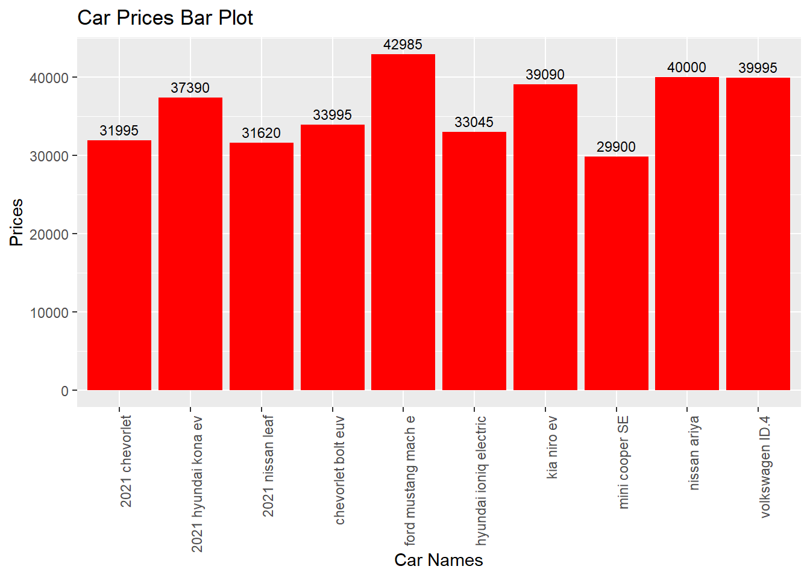
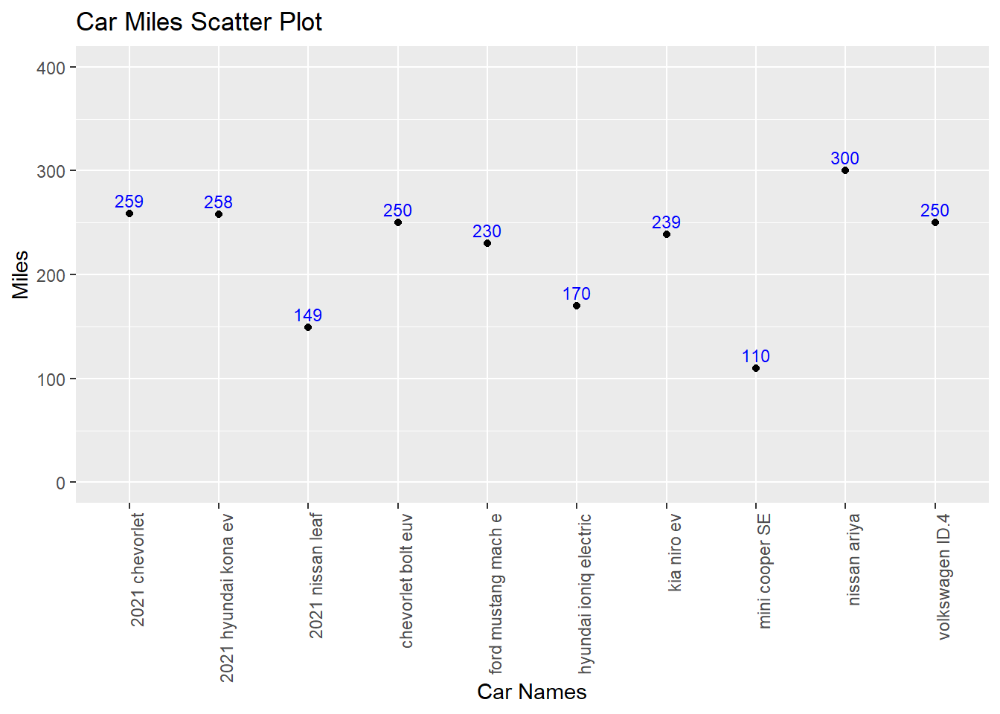
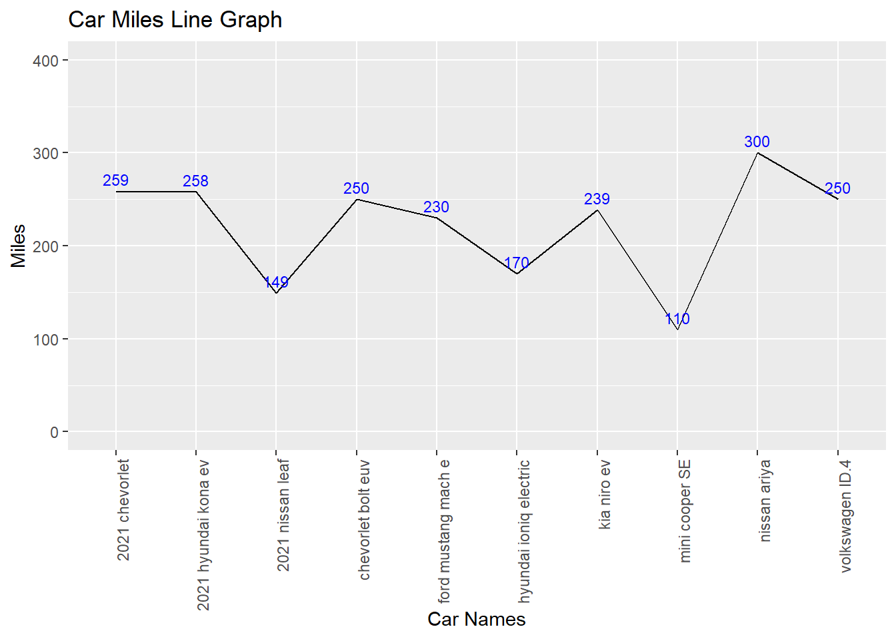

The Visualization explains about the Highest paying Companies In the year 2019 and their ranking by median total salary. In the given visualization the salary amount is a round off figure and we made three proper visualization from the above data set we took .We will be doing Bar graph, Scatter Plot , Line graph as proper visualization.
'data.frame': 26 obs. of 4 variables:
$ rank : int 1 2 3 4 5 6 7 8 9 10 ...
$ employer : chr "Palo Alto Networks" "NVIDIA" "Twitter" "Gilead Sciences" ...
$ median_total_salary: chr "1,70,929" "1,70,068" "1,62,852" "1,62,210" ...
$ X : logi NA NA NA NA NA NA ...
Code
head(salary)
rank employer median_total_salary X
1 1 Palo Alto Networks 1,70,929 NA
2 2 NVIDIA 1,70,068 NA
3 3 Twitter 1,62,852 NA
4 4 Gilead Sciences 1,62,210 NA
5 5 Google 1,61,254 NA
6 6 VMware 1,58,063 NA
The result is that the resulting graph is a bar chart where each bar represents a different employer, and the height of each bar corresponds to the median total salary for that employer. The bars are filled with a blue color, and the x-axis labels are rotated for better visualization.
The resulting graph is a scatter plot where each point represents a different employer. The x-axis shows the employers, and the y-axis shows the corresponding median total salary. This type of plot is useful for visualizing the distribution and relationships between individual data points for each employer.
Code
#line graph using ggplotlibrary(ggplot2)ggplot(salary, aes(x = employer, y = median_total_salary, group =1)) +geom_line() +labs(title ='Employer Median Total Salary Line Graph', x ='Employer') +theme(axis.text.x =element_text(angle =90, hjust =1))

The output graph is a line graph with employers on the x-axis, median total salaries on the y-axis, and a line connecting the median total salary points for each employer. The x-axis labels (employer names) will be rotated by 90 degrees for better visibility. The graph provides a visual representation of how median total salaries vary across different employers.
Data set 2
Model
Price
Miles
mini cooper SE
29900
110
2021 nissan leaf
31620
149
2021 chevorlet
31995
259
hyundai ioniq electric
33045
170
chevorlet bolt euv
33995
250
2021 hyundai kona ev
37390
258
kia niro ev
39090
239
volkswagen ID.4
39995
250
nissan ariya
40000
300
ford mustang mach e
42985
230
The Bad Visualization
Explanation about the Bad Visualization
The Visualization explains about the top 10 America’s cheapest electric cars in the year 2021. In the given visualization of round off miles per charge and we made three proper visualization from the above data set we took so that we can identify exact numbers and can get a proper understanding after seeing out visualizations. We will be doing Bar graph, Scatter Plot , Line graph as proper visualization.
# bar graph using ggplotlibrary(ggplot2)ggplot(EVcars, aes(x = MODEL, y = PRICE)) +geom_bar(stat ="identity", fill ='red') +geom_text(aes(label = PRICE), vjust =-0.5, color ='black', size =3) +labs(title ='Car Prices Bar Plot', x ='Car Names', y ='Prices') +theme(axis.text.x =element_text(angle =90, hjust =1))

The output graph is a bar plot with car models on the x-axis, prices on the y-axis, and bars representing the prices of each car model. Text labels are added above the bars, showing the corresponding prices. The graph provides a visual representation of how the prices vary across different electric car models. The red bars and black text labels enhance the visibility of the data.
Code
# scatter plot using ggplotlibrary(ggplot2)ggplot(EVcars, aes(x = MODEL, y = MILES, group =1)) +geom_point() +geom_text(aes(label = MILES), vjust =-0.5, color ='blue', size =3) +labs(title ='Car Miles Scatter Plot', x ='Car Names', y ='Miles') +theme(axis.text.x =element_text(angle =90, hjust =1)) +ylim(0, max(EVcars$MILES) +100)

The output graph is a scatter plot with car models on the x-axis, miles on the y-axis, points representing the mileage of each car model, and blue text labels above each point indicating the specific mileage value. The y-axis is limited to ensure the plot accommodates all data points within a reasonable range. The graph provides a visual representation of how the mileage varies across different electric car models.
Code
# line graph using ggplot library(ggplot2)ggplot(EVcars, aes(x = MODEL, y = MILES, group =1)) +geom_line() +geom_text(aes(label = MILES), vjust =-0.5, color ='blue', size =3) +labs(title ='Car Miles Line Graph', x ='Car Names', y ='Miles') +theme(axis.text.x =element_text(angle =90, hjust =1)) +ylim(0, max(EVcars$MILES) +100)

The output graph is a line graph with car models on the x-axis, miles on the y-axis, a line connecting the mileage points for each car model, and blue text labels above the line indicating the specific mileage values. The y-axis is limited to ensure the plot accommodates all data points within a reasonable range. The graph provides a visual representation of how the mileage varies across different electric car models over the specified range.